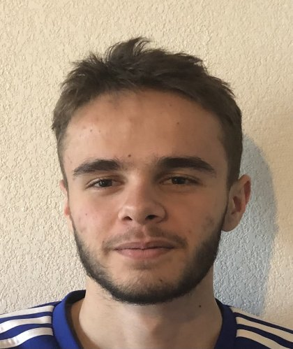

Je m'appelle Alexis, étudiant en 5e année à Epitech Montpellier, passionné par la création de jeux vidéo et les technologies innovantes. J'ai eu l'opportunité d'étudier à Saxion University of Applied Sciences aux Pays-Bas, une expérience qui m'a ouvert à de nouvelles perspectives sur le développement et la collaboration internationale.
Qui suis-je ?

Mes Compétences
Étudiant à Epitech depuis bientôt cinq ans, j'ai acquis de nombreuses compétences dans divers langages et outils de programmation.
C
Programmation bas niveau et gestion de la mémoire pour des projets performants.
C++
Développement de logiciels performants et gestion avancée des ressources pour des applications complexes.
C#
Développement d'applications et de mécaniques de jeu avec Unity.
Unity
Création de jeux vidéo immersifs et de prototypes interactifs.
Docker
Conteneurisation d'applications pour un déploiement efficace et une gestion simplifiée des environnements.
Python
Scripting, automatisation et développement d'applications polyvalentes.
Mes Qualités
Passion
Les jeux vidéos m'ont toujours passionné. Pouvoir travailler dans le développement de ces derniers est très plaisant.
Esprit d'équipe
Mon expérience à l'international m'a appris à collaborer efficacement avec des profils variés.
Lead technique
Référent sur les choix techniques des projet, je validais la faisabilité et coordonnais leur intégration dans le jeu.
Ma Passion pour les Jeux Vidéo
Depuis mon enfance, les jeux vidéo m'ont toujours attiré. Grâce à mon père, j'ai découvert les premiers jeux The Legend of Zelda, Mario, Pokémon et de nombreux autres titres emblématiques de Nintendo.
Aujourd'hui, cette passion reste vive et m'accompagne dans mon apprentissage du développement, non seulement dans le domaine du jeu vidéo, mais aussi dans d'autres secteurs.
Recherche de Stage
Actuellement en 5e année à Epitech, je suis à la recherche d'un stage à temps partiel ainsi que d'un stage à temps plein. Voici les détails :
Stage à temps partiel
Stage à temps partiel d'une durée de 6 mois de Septembre 2025 à Février 2026, 3 jours par semaine
Stage à temps plein
Stage de fin d'étude à temps plein, d'une durée de 6 mois de Mars à Août 2026.